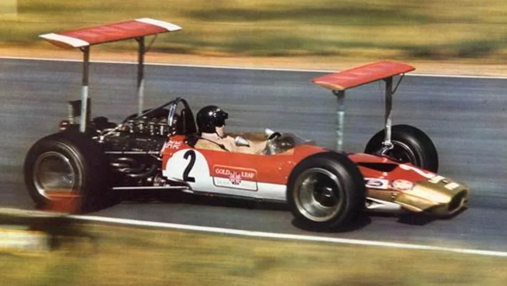
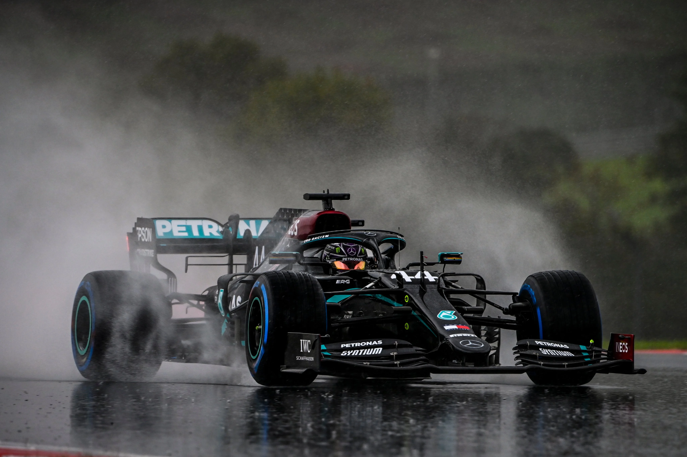

F1 MUNDIALAREN HISTORIA
Automobilismo lehiaketa nagusia da, baina gauza ez zen hain erraza izan bere sorreratik, 1950. urtean.
Formula 1 motor-lehiaketarik garrantzitsuena eta ospetsuena da munduan. Hala ere, ez zuen jatorri erraza izan, Bigarren Mundu Gerraren ondorioz. Automobilismoaren historia XIX.mendearen amaierako lehen lasterketen sorreratik gaur egunera artekoa da. Baina, esan bezala, hurrengo mendearen erdialdera arte ez zen hasi gaur egun F1 izenez ezagutzen duguna, 1950an. |
 |
Formularen 1 hasiera 1950ean hasi zen, Automobilaren Nazioarteko Federazioak (FIA) Munduko Pilotu Txapelketa bat sortzeko hainbat Sari Nazional, Parisen batuko zituela iragarri zuenean. Ferrari, Alfa Romeo eta Maserati ziren garai hartan elkarrekin leihatzen ziren taldeak, eta lehen Sari Nagusia urte hartako maiatzaren 13an egin zen, Silverstoneko zirkuituan. Giuseppe Farina italiarra izan zen lehen irabazlea,geroago F1eko lehen Txapeldun izan zena.
Lehen Sari Nagusiak 1894an Frantzian bertan sortutako automobil-lasterketetan dute jatorria. Orduan banakako ekitaldiak izaten ziren, loturarik gabeak eta lurrezko bideetan, ia inolako araurik gabe.
1927tik 1934ra arte, proben kopurua hamazortzi izatera iritsi zen, Bigarren Mundu Gerraren aurreko maximoa, hazkundea geldiarazi zuena.
Gerra amaitu eta berehala, lau lasterketa baino ez ziren izan, baina Grand Prixeko lehiaketetarako arau batzuk ezarri ziren, autoak zein pilotoak bete behar zituztenak. Formula deitu ziren, baina 1947. urtera arte ez ziren zehaztu, AIACR (Association Internationale des Automobile Clubs Reconnus) zaharra berrantolatu eta FIA deitu zenean.
Soiltasuna eta garbitasuna ziren monoplazen ezaugarri nagusiak. Motorraren gidariaren aurrean zeuden, eta gidatzeko postuak atzeratuak, ia atzeko ardatzaren ondoan. Esan bezala, 1950 hartan Nino Farina eta bere Alfa Romeo 158 ospetsua izan ziren nagusi. Alfetta magoaren eskuetan egon zinren F1eko autoen bilakaeraren hastapenak.
50eko hamarkadaren amaieran, eta armada transalpinoaren (Alfa Romeo eta Ferrari) potentziaren aurka borrokatzeko ezintasunaren aurrean, bere aurkariek, batez ere britainiarrek, txasisarekin lotutako beste bide batzuk aztertu zituzten.
Horrela, Charles eta John Cooperren (aita-semeak) taldeak motorrak bolidoen atzealdean kokatzea erabaki zuen, pilotoaren eserlekua aurrerantz mugituz. Oso aurkikuntza eraginkorra izan zen, Jack Brabham 1959an bere bolidoetako batekin irabaztea eragin zuena.
F1en autoei hegoak ateratzen zaizkie
60ko hamarkadaren etorrerarekin, autoen aurrealdea estilizatu eta tamaina txikiagokoa bihurtu zen. Hauen errendimendua hobetzeko elementu gisa erabilitako gehigarri aerodinamikoak sortu berriak ziren, Colin Chapmanen buru zoragarriaren ondorioz.
1962an aluminiozko txasis monkaskoa (Jim Clarken Lotus 25) eraiki zen, eta karrozerian hegal txiki batzuk gehitu ziren (Lotus 49B, Monako GP 1968). Aurkikuntza horiekin, Lotusek ahoa zabalik utzi zituen.
| Izan ere, gainerako taldeek presaka kopiatu zuten ideia, eta hasiera eman zioten aleroien eta aerodinamikaren lasterketa ero bati. Horrela, beste jauzi handi bat egin zen F1eko autoen bilakaeran. Aleroi horietako batzuk – bikoitzak – izugarriak ziren.
|
 |
Eta gero?
Gauzak horrela, 80ko hamarkadaren erdialdean, aleroiak txikiagoak egin ziren, eta aire-hartuneen ordez, cockpit -aren atzeko kare-kontrako arku txiki bat jarri zen.
1993an, laguntza elektronikoak neurrigabeko papera hartzen hasi ziren autoetan; karrozeriak, berriz, alboetako haize-deflektorez bete ziren. Urtebete geroago, FIAk erabaki garrantzitsu bat hartu zuen F1 autoen bilakaerarako: sistema elektroniko guztiak debekatzea, gidatzeko zailak ziren makinak bihurtuz. Hurrengo aldaketa garrantzitsuak 2009an erregelamendu-aldaketarekin etorri ziren, non Red Bullek gehigarri aerodinamiko berri bat aurkeztu zuen, motorraren kapotaren inguruan, marrazo hegatsa edo bizkar-hegatsa izenez ezaguna. Laster, Ferrari bezalako beste talde batzuek bat egin zuten Milton Keynesen ideiarekin. Formulako 1 autoen bilakaerak bizkortzen jarraitzen zuen.
Autoen hibridazioa
V6 1.6 motor hibridoak gehitu ziren; bai, aspiradora merke gisa entzuten direnak. Horrela, Formula 1 autoen bilakaerak ezustekoa izan zuen. Hala ere, hurrengo zortzi urteetan errendimendu hobekuntzak erraldoiak izan ziren, batez ere Mercedesen eskutik. Etapa honetan, 2020an, Formula 1-ak historiako autorik azkarrenak izan zituen, eta Mercedes W10a gaur arte ezagutu den autorik azkarrena izan zen (ikusu argazkia).

2022
2022an beste erreglamendu aldaketa handi bat egon zen autoak txikiagoak egiteko eta beren arteko leihak errazteko. Ondorioz, hauek pisutsuagoak eta motelagoak bihurtu ziren, baina denborarekin saihestezina da auto berrien abiadura handitzen joatea eta markak gutxitzea.